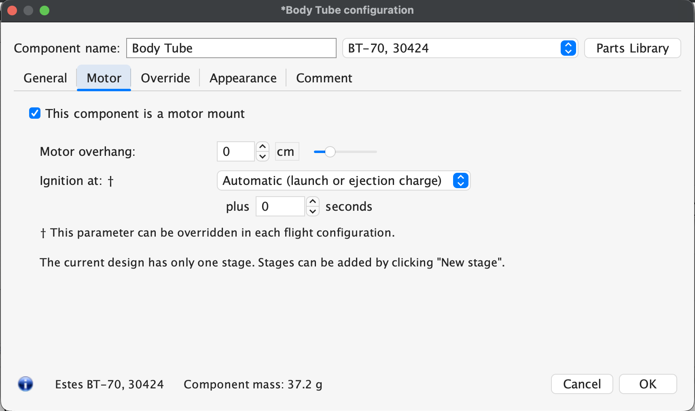
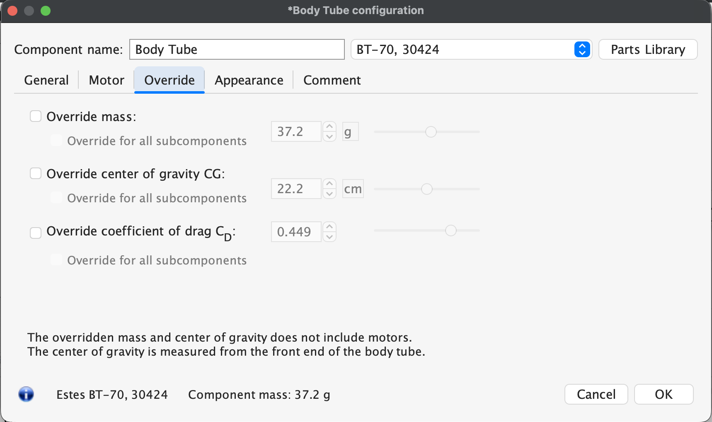

<div id="content-source">  
  <div id="openrocket-transition">
    <h2 class="content-header">Designing Transitions in OpenRocket</h2>
    <p>Transitions are used to move from one size of body tube to another, providing a smooth transition</p>
    <div class="content-container">
      <div class="content-left">
        <ol><h4>General Tab</h4>
          <li>Parts Library. Transitions are Custom Built and so this is not necessary</li>
          <li>Shape. Like a Nose Cone, Transitions can have special profiles: Conical, Ogive, etc.</li>
          <li>Shape Factor. Used to modify the chosen shape, if applicable. Read the paragraph on the shape to understand how the shape factor applies.</li>
          <li>Length of Transition. Be careful with the length of the Transition, it can be heavy and affect your CG.</li>
          <li>Forward Diameter. Match the values given by the parts library for your size of tube or the table below.</li>
          <li>Inner Diameter. Match the values given by the parts library for your size of tube or the table below.</li>
          <li>Wall Thickness. Match the values given by the parts library for your size of tube or the table below.</li>
          <li>Compoenent Material. Match the values given by the parts library for your size of tube or the table below.</li>
          <li>Component Finish. Select smooth paint.</li>
        </ol>
        <ol><h4>Motor Tab</h4>
          <li>Check this box if you are planning on using your body tube as a motor mount. That is, if you are <strong>not</strong> using an inner tube and centering rings for your motor.</li>
          <li>Motor overhang. Enter the amount your motor will extend outward from the tube. For small motors, select 6.35mm or 1/4 inch. For large motors, measure the length of the motor thrust ring.</li>
          <li>Ignition at: Check this box if you are using a computer to ignite a motor.</li>
        </ol>
        <ol><h4>Override Tab</h4>
          <li>Override Mass: once the body tube is cut to length, weigh it to find the actual mass. Check this box and add the actual value.</li>
          <li>Override center of gravity CG: this allows you to override the location of the center of gravity (CG). Leave unchecked unless you have a way of measuring this.</li>
          <li>Override coefficient of drag: leave unchecked unless you have a way of measuring this value.</li>
        </ol>
      </div>
      <div class="content-right">
        <p>Change these images</p>
        
        
        
      </div>
    </div>
    <h3>Standard Body Tube Sizes</h3>
    <div id="body-tube-table" style="display: flex; justify-content: center;">
        <table>
            <thead>
            <tr>
                <th><h4>Tube Size</h4></th>
                <th><h4>Outer diameter (mm)</h4></th>
                <th><h4>Inner Diameter (mm)</h4></th>
                <th><h4>Wall Thickness (mm)</h4></th>
                <th><h4>Notes</h4></th>
            </tr>
            </thead>
            <tbody>
            <tr>
                <td>BT20</td>
                <td>18.7</td>
                <td>18.0</td>
                <td>0.33</td>
                <td>Same size as motor tubes for 18mm motors.</td>
            </tr>
            <tr>
                <td>BT50</td>
                <td>24.8</td>
                <td>24.1</td>
                <td>0.33</td>
                <td>Same size as motor tubes for 24mm motors.</td>
            </tr>
            <tr>
                <td>BT55</td>
                <td>33.7</td>
                <td>32.6</td>
                <td>0.533</td>
                <td>Minimum size for 29mm motors</td>
            </tr>
            <tr>
                <td>BT60</td>
                <td>41.6</td>
                <td>40.5</td>
                <td>0.533</td>
                <td>Minimum size for clusters</td>
            </tr>
            <tr>
                <td>BT70</td>
                <td>56.3</td>
                <td>55.2</td>
                <td>0.533</td>
                <td></td>
            </tr>
            <tr>
                <td>BT80</td>
                <td>66.0</td>
                <td>65.0</td>
                <td>0.508</td>
                <td></td>
            </tr>
            </tbody>
        </table>
    </div>
    <h3 class="content-header">Video Example</h3>
    <iframe
      width= "100%"
      height = 600px
      src="https://www.youtube.com/embed/OyO5Dnmm7RQ?wmode=opaque"
      title="AHS Rocketry Body Tube Design"
      frameborder="0"
      allow="accelerometer; clipboard-write; gyroscope; picture-in-picture"
      allowfullscreen>
    </iframe>
  </div>
</div>


